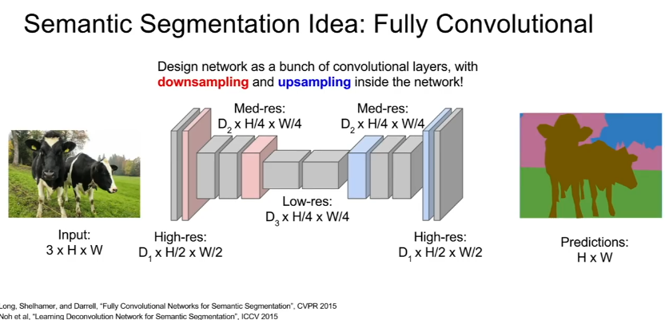

- Rather than assigning the entire image to a category, we assign every pixel in the image to one of a set of (predefined) categories.
Naive Approach: A naive approach is sliding window (Appendix 1). No one does this, it’s a bad idea.
Naive Approach 2: (Appendix 2) Vanilla Fully Concolutional layer. Have the network be a stack of convolutional layers which all preserve the spatial size of the image, with no fully connected layers.
- The final convolutional layer outputs a tensor of size (C x H x W), where C is the number of categories we care about. This tensor gives our classification scores for every tensor in the input image, at every location in the input image. We put a classification loss at every pixel of the output, and take an average over the classification loss over pixels.
- Issue. Convolutions that preserve spatial size are incredibly computationally expensive and would take a ton of memory. Normal CNNs shrink the image in later layers, making it manageable, but if the image size is preserved at each depth, it’s very memory intensive. Thus, instead of preserving the image size at every depth, often a fully convolutional network with downsampling is used.
Approach 3:
- Similar approach to Approach 2, but use downsampling and upsampling in the middle of the network (Appendix 3). Often used in practice as of 2017. This is much more computationally efficient because we can work with the smaller image for many layers.
- How does one perform upsampling? Some strategies are Nearest Neighbos, Bed of Nails, Max Unpooling, and Upconvolution (Appendix 3).
- Max unpooling can be used in a symmetric network where there was a max pooling before. We remember which element was max in the maxpooling step and then restore that element when we do max-unpooling (See pic in Appendix 3).
- Upconvolution (transpose convolution) is a convolutional layer where instead of dot-product, the filter is multiplied by the weight in the input and directly added to the output at the location. This is the same as a convolution in an inverse direction.
2. Classification + Localization
Classify the image, and find out where the object is in the image (draw a bounding box).
Idea 1: Run an ordinary CNN for classification, but also have an additional task of predicting the locations of the bounding box (x,y,w,h). Now there are two loss functions - one classification loss and the bounding box. Often we just use L2 loss for the bounding box coordinates (And treat the bounding box prediction as a regression problem). (Appendix 4)
Aside: Using Regression to find locations in an image can be used to do human pose estimation also.
3. Object Detection
(over a fixed set of categories)
Region Proposals Methods for Object Detection-
Find ‘blobby’ image patches likely to contain objects with a fast algorithm
Perform object classification on each patch to see if there’s an object we care about in that region. Selective Search is a commonly used one. (Appendix 5)
R-CNN is a 2014 paper that does region proposal.
Take each of the regions and warp them to a fixed square size, and run a conv net through each of them to mamek classification decisons. (Appendix 5). R-CNN will also use regression to produce a correction to the bounding box proposed at the region proposal stage. However, R-CNN has some problems (it is pretty slow).
Fast-R-CNN puts the crops on the convolutional feature map, not the original image. They then turn these crops into squares in a differentiable way using an “RoI Pooling Layer”. It is 10x faster to train and test because we’re sharing computation between feature maps. (Appendix 5) Now the time bottleneck is the region proposals.
This was made even faster by Faster R-CNN, where the region proposals is done by the CNN. They insert a Region proposal Network to predict proposals from features, and jointly train on: 1. RPN classify object/not object, 2. RPN regress box coordinates 3. Final Classification Score, 4. Final box coordinates. [The region proposal network was trained based on % overlap with ground truth objects]
YOLO/SSD based Methods for Object Detection
YOLO/SSD (Single Shot Detection)
Instead of doing independent processing for each of these separate regions, instaed we want ot treat this like a regression problem and make all these predictions all at once with some kind of big CNN.
In each input image, divide that input image into some coarse grid, and within that grid cells, imagine a set of base boxes centered at each grid cell. For each of the big grid cells, predict (Appendix 6)
- For each of the B base bounding boxes, predict offset of the object from the dimensions of the base boudning box with 5 numbers (dx, dy, dh, dw, confidence)
- Predict classification scores for each of the C classes, including background.
Thus assuming 7x7 grid, our output is a 3D 7 x 7 x (5 * B + C) tensor. We can have the input be an image, the output be a hand-labelled 3D tensor, and train the whole thing with a giant CNN.
There is a whole family of obkect detection methods. (Appendix 6) Faster RCC is slower but more accurage, SSD is much faster buch not as accuate. “Huang er al Speed/accuracy rtadeoffs for modern convolutional object detectors” 2017.
Now there is YOLO-v2.
4. Instance Segmentation
Mask R-CNN for Instance Segmentation
Given a full image, predict 1) the locations and identities of objects in that image, and find out which pixels belong to that image instead of just a bounding box.
Mask R-CNN was used in 2017.
You take the whole image, and the whole image goes into a convolutional network and a learned region proposal network (like Faster R-CNN). Once we have our region proposals, we project htose proposals onto our convolutional feature map, and instead of just making a classification, we want to predict a segmentation mask for each of these region proposals. So we have two branch betworks - one is eaxctly the same as Faster R-CNN, running classification to tell us what is the category of object in that region proposal, and also predict some bounding box coordinates, and the second branch, which looks like a semantic segmantation mini-network that predicts for each pixel whether or now it is an object.
(Appendix 7)
Mask R-CNN also does pose estimation, if you add joint coordinates as a learning objective to the classification scores in the Faster-R-CNN top branch! (Appendix 7)
Appendix 1:
Naive Sliding window approach to semantic segmentaiton - Slide a small window over each patch of the input image and train a classifier for each window. Super super computationally expensive, thus never used.
Appendix 2:
Fully Convolutional Network for Semantic Segmentaiton - A better idea. Will work, but is super computationally expensive because we have multiple stacked convolutions over a high resolution image.
Appendix 3:

Downsample like Maxpool (or stride 2).
Upsample like Nearest Neighbors, Bed of Nails, or Max Unpooling.
Transpose Convolution (Upconvolution)
Appendix 4: Object Classification and Localization
Aside: Using Regression to find locations in an image can be used to do human pose estimation also.
Appendix 5: Region Proposal for Object Detection, R-CNN
R-CNN (2014) a region proposal algo, is pretty slow.
It was imrpoved by Fast R-CNN, which crops in the intermedate convolutional layers, so can share features between crops. This makes it a lot faster, and it can execute in less than a second. Fast R-CNN’s speed is bottlenecked by the region proposals.

This was made even faster by Faster R-CNN, where the region proposal is put inside of the network as a Region Proposal Network.
Appendix 6: YOLO/SSD Object Detection
Aside:
Appendix 7: Mask R-CNN
For Instance Segmentation
Mask R-CNN can do object detection, object segmentation, and pose estimation! With very good results!
A single Feedforward network is determining how many people are in an image, determining where (which pixels) correspond to that image, and what that person’s pose is, even in crowded scenes, and also runs in real time (5 times per second).